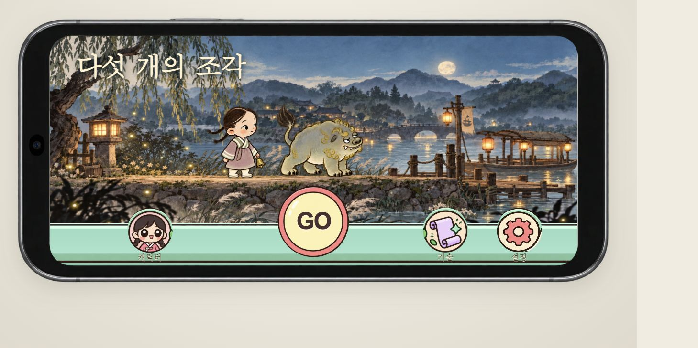
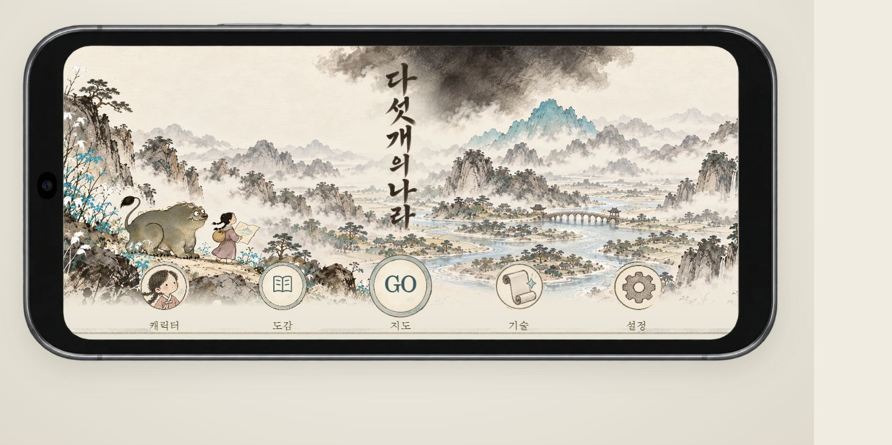
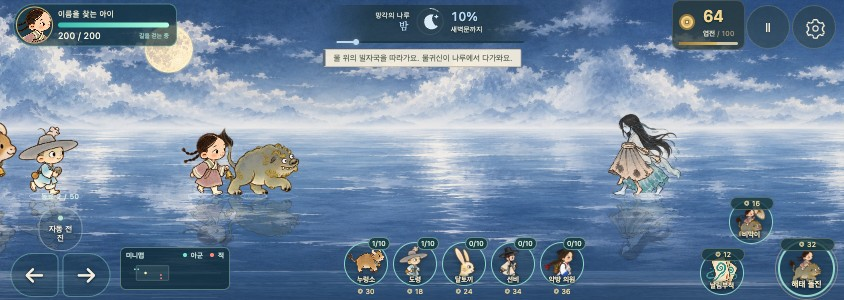

다섯개의 나라
버전 비교 · 이전 버전도 계속 플레이할 수 있습니다.


각 버전은 별도 화면으로 열립니다. 같은 브라우저의 기존 플레이 기록을 함께 사용합니다. 새 버전 반영 후에도 이전 버전을 제거하지 않습니다.
버전 비교 · 이전 버전도 계속 플레이할 수 있습니다.



각 버전은 별도 화면으로 열립니다. 같은 브라우저의 기존 플레이 기록을 함께 사용합니다. 새 버전 반영 후에도 이전 버전을 제거하지 않습니다.